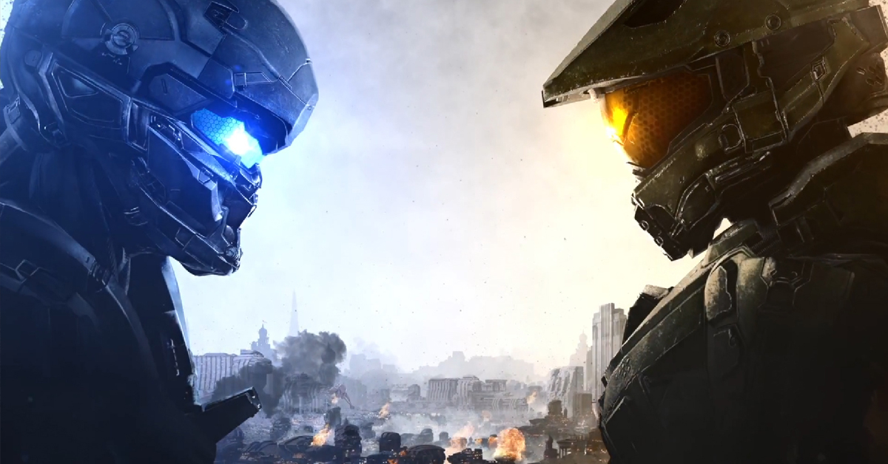
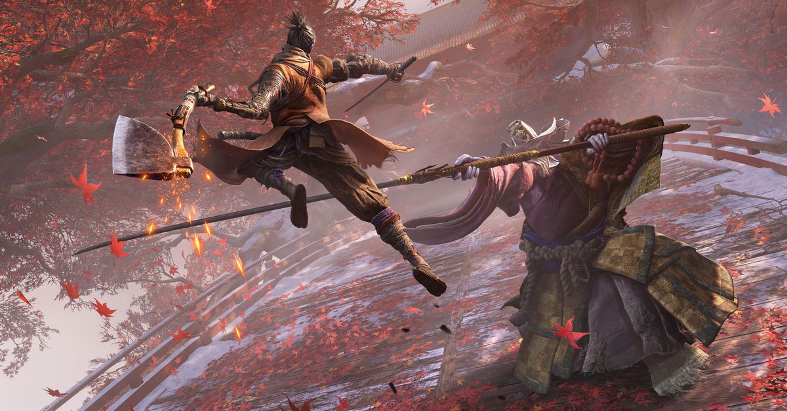
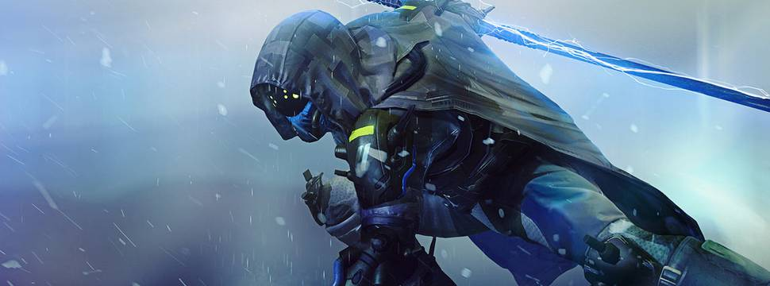
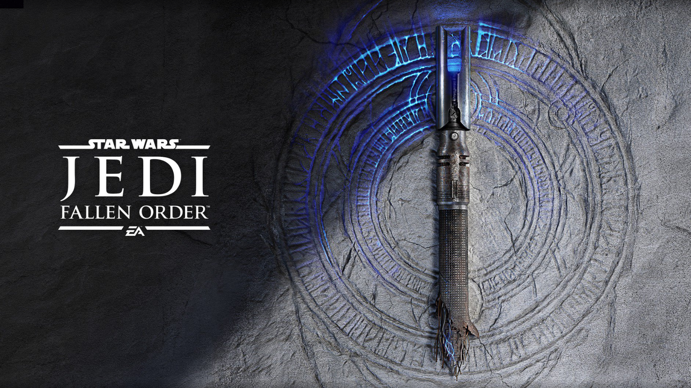
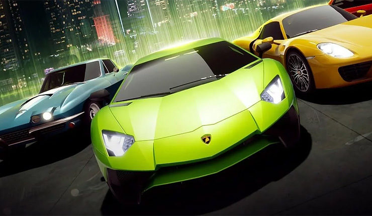
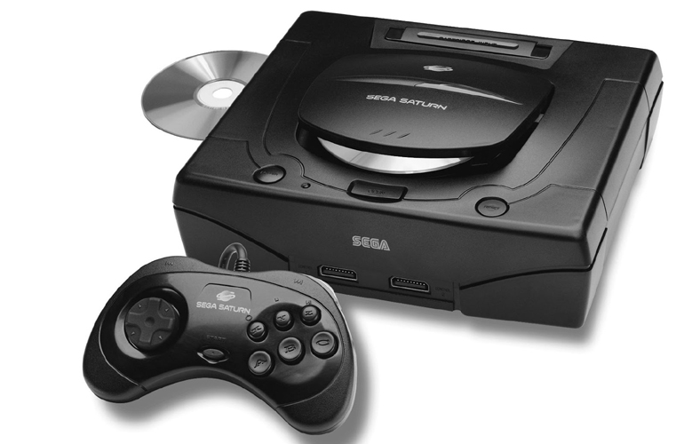
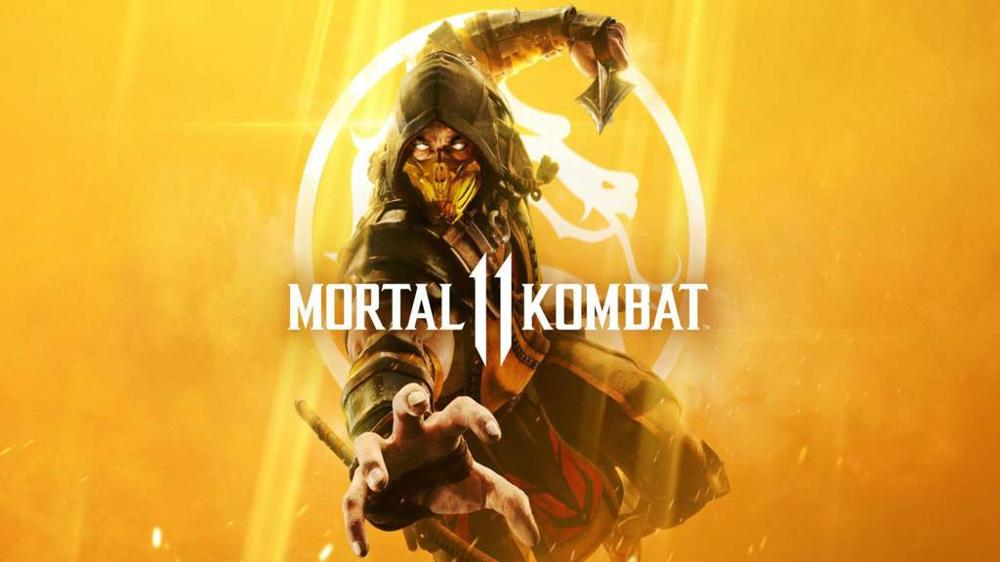
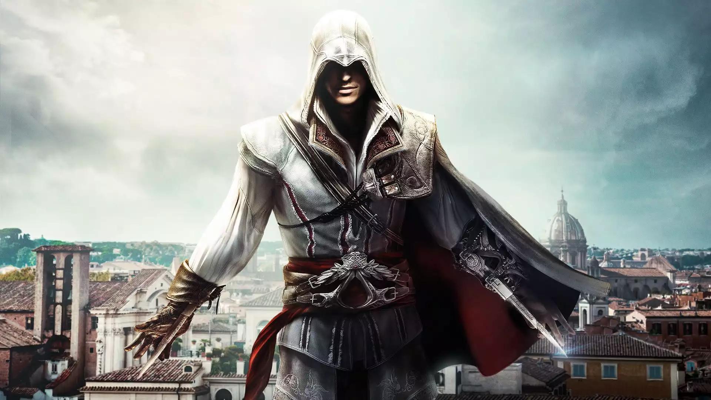

Sekiro: Shadows Die Twice já vendeu mais de 2 milhões de unidades

Destiny 3 sai em 2020 para novos PlayStation e Xbox, diz rumor
Star Wars Jedi: Fallen Order

Forza Street é anunciado oficialmente

Sega Saturn Mini não deve acontecer tão cedo, de acordo com a Sega

Mortal Kombat 11 terá batalhas em equipe no modo Towers of Time

Minecraft ultrapassa a marca de 30 milhões de unidades no PC

Próximo Assassin's Creed será nórdico, sugere easter egg em The Division 2
